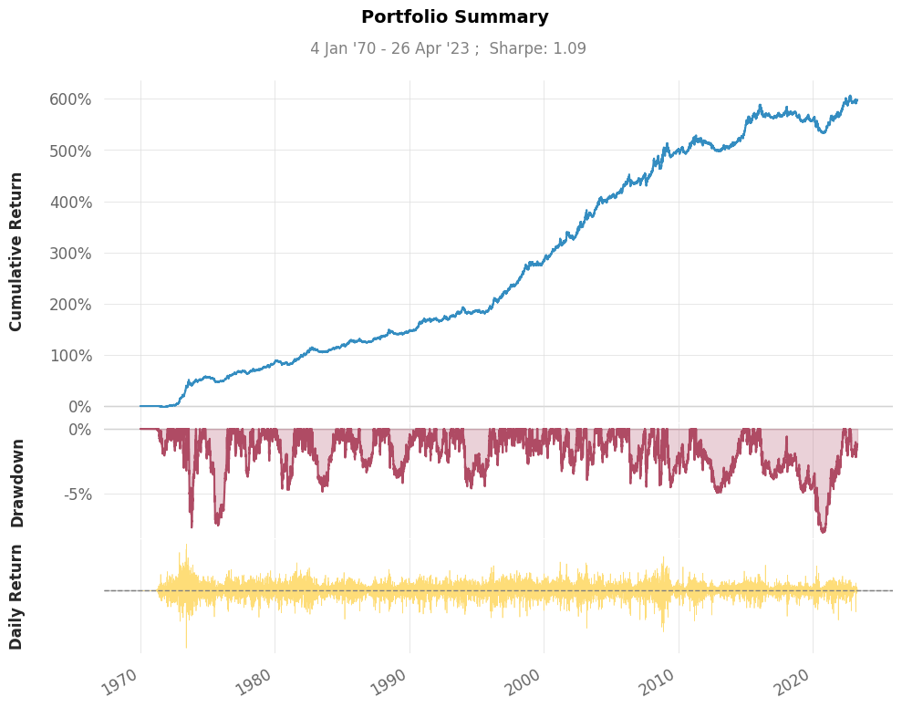

CTA 3.0#
import warnings
warnings.simplefilter(action='ignore', category=FutureWarning)
import pandas as pd
import numpy as np
from cvx.simulator import FuturesPortfolio
from cvx.simulator import interpolate
# Load prices
prices = pd.read_csv("data/Prices_hashed.csv", index_col=0, parse_dates=True)
# interpolate the prices
prices = prices.apply(interpolate)
We use the system: $\(\mathrm{CashPosition}=\frac{f(\mathrm{Price})}{\mathrm{Volatility(Returns)}}\)$
This is very problematic:
Prices may live on very different scales, hence trying to find a more universal function \(f\) is almost impossible. The sign-function was a good choice as the results don’t depend on the scale of the argument.
Price may come with all sorts of spikes/outliers/problems.
We need a simple price filter process
We compute volatility-adjusted returns, filter them and compute prices from those returns.
Don’t call it Winsorizing in Switzerland. We apply Huber functions.
def filter(price, volatility=32,clip=4.2, min_periods=300):
r = np.log(price).diff()
vola = r.ewm(com=volatility, min_periods=min_periods).std()
price_adj = (r/vola).clip(-clip, clip).cumsum()
return price_adj
Oscillators#
All prices are now following a standard arithmetic Brownian motion with std \(1\).
What we want is the difference of two moving means (exponentially weighted) to have a constant std regardless of the two lengths.
An oscillator is the scaled difference of two moving averages.
def osc(prices, fast=32, slow=96, scaling=True):
diff = prices.ewm(com=fast-1).mean() - prices.ewm(com=slow-1).mean()
if scaling:
# attention this formula is forward-looking
s = diff.std()
# you may want to use
# f,g = 1 - 1/fast, 1-1/slow
# s = np.sqrt(1.0 / (1 - f * f) - 2.0 / (1 - f * g) + 1.0 / (1 - g * g))
# or a moving std
else:
s = 1
return diff/s
from numpy.random import randn
price = pd.Series(data=randn(100000)).cumsum()
o = osc(price, 40, 200, scaling=True)
print("The std for the oscillator (Should be close to 1.0):")
print(np.std(o))
The std for the oscillator (Should be close to 1.0):
0.9999949999875
#from pycta.signal import osc
# take two moving averages and apply tanh
def f(price, slow=96, fast=32, vola=96, clip=3):
# construct a fake-price, those fake-prices have homescedastic returns
price_adj = filter(price, volatility=vola, clip=clip)
# compute mu
mu = np.tanh(osc(price_adj, fast=fast, slow=slow))
return mu/price.pct_change().ewm(com=slow, min_periods=300).std()
from ipywidgets import Label, HBox, VBox, IntSlider, FloatSlider
fast = IntSlider(min=4, max=192, step=4, value=32)
slow = IntSlider(min=4, max=192, step=4, value=96)
vola = IntSlider(min=4, max=192, step=4, value=32)
winsor = FloatSlider(min=1.0, max=6.0, step=0.1, value=4.2)
left_box = VBox([Label("Fast Moving Average"), Label("Slow Moving Average"), Label("Volatility"), Label("Winsorizing")])
right_box = VBox([fast, slow, vola, winsor])
HBox([left_box, right_box])
pos = 1e5*f(prices, fast=fast.value, slow=slow.value, vola=vola.value, clip=winsor.value)
portfolio = FuturesPortfolio.from_cashpos_prices(prices=prices, cashposition=pos, aum=1e8)
/home/runner/work/cs/cs/.venv/lib/python3.10/site-packages/pandas/core/internals/blocks.py:393: RuntimeWarning: invalid value encountered in log
result = func(self.values, **kwargs)
portfolio.snapshot()
findfont: Font family 'Arial' not found.
findfont: Font family 'Arial' not found.
findfont: Font family 'Arial' not found.
findfont: Font family 'Arial' not found.
findfont: Font family 'Arial' not found.
findfont: Font family 'Arial' not found.
findfont: Font family 'Arial' not found.
findfont: Font family 'Arial' not found.
findfont: Font family 'Arial' not found.
findfont: Font family 'Arial' not found.
findfont: Font family 'Arial' not found.
findfont: Font family 'Arial' not found.
findfont: Font family 'Arial' not found.
findfont: Font family 'Arial' not found.
findfont: Font family 'Arial' not found.
findfont: Font family 'Arial' not found.

pd.set_option('display.precision', 2)
portfolio.metrics()
Strategy
------------------ ----------
Start Period 1970-01-05
End Period 2023-04-26
Risk-Free Rate 0.0%
Time in Market 97.0%
Cumulative Return 598.11%
CAGR﹪ 2.55%
Sharpe 1.09
Prob. Sharpe Ratio 100.0%
Sortino 1.59
Sortino/√2 1.13
Omega 1.21
Max Drawdown -8.04%
Longest DD Days 2274
Gain/Pain Ratio 0.21
Gain/Pain (1M) 1.3
Payoff Ratio 1.01
Profit Factor 1.21
Common Sense Ratio 1.28
CPC Index 0.67
Tail Ratio 1.06
Outlier Win Ratio 3.92
Outlier Loss Ratio 3.74
MTD 0.39%
3M 0.79%
6M -0.63%
YTD 0.4%
1Y 1.23%
3Y (ann.) 1.82%
5Y (ann.) 0.54%
10Y (ann.) 1.01%
All-time (ann.) 2.55%
Avg. Drawdown -0.72%
Avg. Drawdown Days 40
Recovery Factor 24.54
Ulcer Index 0.02
Serenity Index 3.76